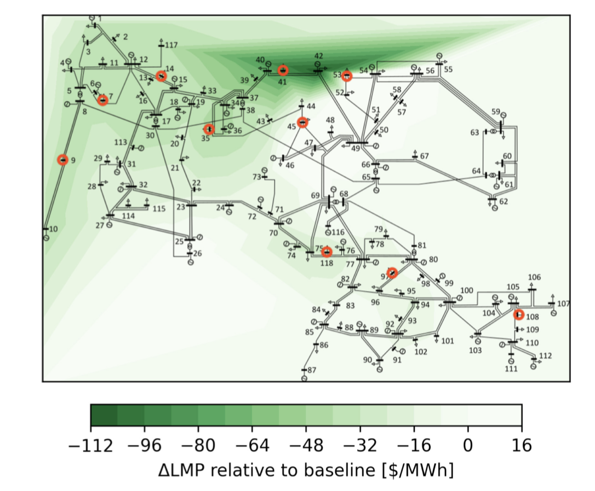

About
I am a PhD student in Electrical and Computer Engineering at the University of Michigan. My research focuses on optimization, control, and machine learning for power and energy systems.
I work on integrating data-driven models with optimization frameworks, with applications in electricity markets and large-scale energy systems.
Research Highlight
The figure below shows the impact of data center-aware (DCA) demand allocation on locational marginal prices (LMPs) in the IEEE 118-bus system.

The color map represents the change in Locational Marginal Price (LMP) relative to a baseline allocation. Buses hosting data centers are highlighted in red. For the majority of these buses, DCA significantly reduces LMPs, indicating improved economic efficiency and better system-wide coordination.
Research Interests
- Optimization and control for power systems
- Machine learning for energy systems
- Electricity markets and dynamic pricing
- Optimization over trained neural networks
Contact
Email: xinwei@umich.edu